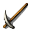
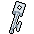

| Icon | Name | Description |
|---|---|---|
| iron axe | An iron axe is used for cutting wood and as a one-handed melee weapon. |
| fishing pole | A fishing pole is used for fishing. |
|  | pickaxe | A pickaxe is used for mining. |
| scythe | A scythe is used for harvesting food. |
|  | lockpick | A lockpick is used for opening locked containers. |
| butcher knife | A butcher knife is used for butchering cattle. |
| steel axe | A steel axe is used for cutting wood and as a melee weapon. |